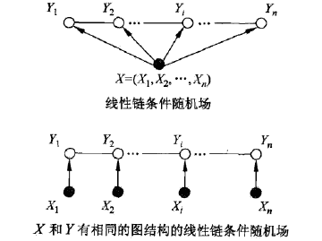

CRF#
一、图模型#
1.1 把图看作是一种概率分布#
现在考虑有一系列随机变量Y，y=\{y_1, y_2, ..., y_k\}是Y的分布。由于所有的随机变量之间不是完全相互独立的，所以y的概率分布并不直接等于每个元素的概率连乘，它们之间是有一定的约束关系的。定义这些约束关系为\psi_i(y_i), i \in \{1, 2, ..., I\}。这样可以将y的概率分布写出来：
其中Z是归一化因子。
以HMM为例，HMM的状态序列就是一个图，只是它是线性链。序列为q = \{q_0, q_1, ..., q_T\}，长度为T；每个节点的取值空间为Q = \{Q_1, Q_2, ..., Q_N\}，可取值数量为N。在这里Q是一些列随机变量，q是Q的分布，而HMM模型中转移概率矩阵就是各个随机变量之间的约束关系。
另外图可分为无向图和有向图。有向图是节点k_1到节点k_2的约束与节点k_2到节点k_1的约束是不同的，用概率体现出来可以是p(k_1|k_2) != p(k_2|k_1)。而无向图则永远是p(k_1|k_2) = p(k_2|k_1)。
1.2 从概率分布的角度理解最大团与势函数#
这些都是自己的猜测，不一定准确，对图论不是很了解
最大团是任意两节点之间都有边连接，且不能再新加入节点使其满足该条件。从概率分布的角度理解
- 任意两点间都有边连接表示这些随机变量之间都存在约束关系，不存在相互独立的可能。一个最大团的联合概率用一个势函数表示：\psi_{i}(y_i)。这是整个分布的联合概率的最小单位，不可再分。
- 不能再新加入节点使其满足条件表示两个最大团之间应该是相互独立的，体现在概率分布的公式上就是势函数相乘：
有如下无向图模型，及其联合概率与势函数的关系：

二、条件随机场#
条件随机场：在给定随机变量X的条件下，随机变量Y的马尔科夫随机场。
2.1 形式化定义#
设X = (X_1, X_2, ..., X_n)，Y = (Y_1, Y_2, ..., Y_n)为线性链表示的随机变量序列，若在给定随机变量序列X的情况下，随机变量Y的条件概率分布p(Y|X)构成条件随机场，则称p(Y|X)是线性链条件随机场。
线性链条件随机场满足马尔可夫性：
理解该性质可以参考如下图：

2.2 参数化形式#
其中：
- Z(x)是归一化因子
- t_k是转移特征函数，依赖于当前和前一个位置
- s_l是状态特征函数，依赖于当前位置
- \lambda_k是转移特征函数的权重
- \mu_l是状态特征函数的权重
2.3 简化形式#
简化形式：即将局部特征函数统一成一个全局特征函数。
定义几个字符：
- K_1：转移特征函数的个数
- K_2：状态特征函数的个数
- K = K_1 + K_2
2.3.1 使用新的符号将 t_k 和 s_l 统一表示为 f_k(y_{i-1}, y_i, x, i)：#
在 f_k(y_{i-1}, y_i, x, i) 中有两个比较重要的参数：
- 参数 i：序列中节点的位置；
- 参数 k 和 l，合并之后统称为参数 k：表示是哪个特征函数；
2.3.2 对所有在位置i的特征求和：#
在f_k(y,x)中可以看到已经把参数 i 去掉了，那么相比于f_k(y_{i-1}, y_i, x, i)所表示的含义上的差别：
- f_k(y_{i-1}, y_i, x, i) 表示在位置 i 附近，y_{i-1}、y_i、x之间的关系。这是在 i 这个位置的局部特征；
- f_k(y,x) 表示在整个序列上 y 和 x 之间的关系。这是一个全局特征；
2.3.3 使用 w_k 统一表示 \lambda_k 和 \mu_l 这两个权重：#
2.3.4 使用 f_k(y,x) 和 w_k 来表示条件随机场：#
先看一下使用局部特征函数表示条件随机场：
然后是使用全局特征函数表示条件随机场：
2.3.5 引入向量#
- 使用 w 表示权值向量，即 w = \{w_1, ..., w_K\}^T
- 使用 F(y,x)，即 F(y,x) = (f_1(y,x), f_2(y,x), ..., f_K(y,x))^T
使用 w 和 F(y,x) 的内积形式表示条件随机场：
相关链接#
苏剑林 简明条件随机场CRF介绍
https://spaces.ac.cn/archives/5542/comment-page-1
条件随机场 CRF总结和实现